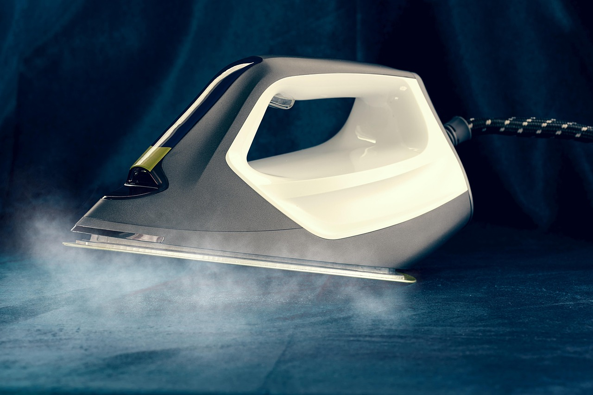

Cách làm sạch đế bàn ủi bị cháy vải mà không làm xước đế

Đế bàn ủi dính vết cháy vải thì ủi đâu rít đó, lại còn dây bẩn sang áo sáng màu. Nhiều người lên mạng tìm mẹo, thấy nào là giấm với muối, nào là bột nở, nào là sáp nến, làm theo rồi đế xước hẳn, coi như hỏng. Bài này nói thẳng: cách đúng là làm theo hướng dẫn của nhà sản xuất, không phải theo mẹo lan truyền.
Nguyên tắc số 1: đọc hướng dẫn của chính chiếc bàn ủi nhà bạn
Mỗi loại đế chỉ định khác nhau: đế inox, đế chống dính, đế gốm mỗi loại chịu được một kiểu làm sạch khác nhau. Trước khi chùi bất cứ thứ gì lên đế, hãy đọc phần vệ sinh trong hướng dẫn sử dụng của chính chiếc bàn ủi nhà bạn. Hướng dẫn đó luôn là chuẩn cuối cùng. Những gì dưới đây là hướng dẫn chung của các nhà sản xuất bàn ủi hơi nước, khớp với đa số máy trên thị trường.
Cách lau đế theo hướng dẫn của nhà sản xuất
Rút điện, để bàn ủi nguội hẳn, rồi dùng khăn ẩm với chất tẩy rửa dạng lỏng không mài mòn để lau sạch các vết bẩn và cặn bám trên đế. Lau nhẹ nhàng, tránh để đế va chạm mạnh với vật kim loại. Lau xong thì lau khô hoàn toàn trước khi cất hoặc ủi tiếp.
Có 3 thứ nhà sản xuất cấm dùng lên đế, và đây là điểm quan trọng nhất của bài này:
- Không dùng miếng cọ rửa hay vật mài mòn. Chúng làm xước lớp phủ bảo vệ của đế, nhất là đế chống dính và đế gốm. Đế đã xước thì ủi sẽ rít vĩnh viễn, không sửa lại được.
- Không dùng giấm hay hóa chất lên đế. Hướng dẫn của nhà sản xuất ghi rõ điều này. Mẹo giấm với muối và mẹo bột nở lan truyền nhiều trên mạng, nhưng chúng không nằm trong hướng dẫn của nhà sản xuất và có thể làm hỏng lớp phủ đế. Đừng làm theo.
- Không đổ giấm hay chất tẩy cặn vào bình nước. Bình nước chỉ dùng nước sạch theo hướng dẫn. Đổ giấm vào bình không giúp sạch đế mà còn có thể làm hỏng các chi tiết bên trong.
Cặn bám từ lỗ hơi nước
Nhiều vết bẩn trên đế không phải do cháy vải mà do cặn khoáng từ nước thoát ra qua các lỗ hơi nước, lâu ngày đóng thành vệt nâu. Cách xử lý đúng là dùng chức năng xả cặn của bàn ủi hơi nước — chức năng này có sẵn trên máy, dùng hơi nước và nước nóng để đẩy cặn ra khỏi đế và lỗ hơi.
Nhà sản xuất khuyến cáo dùng chức năng xả cặn khoảng 2 tuần một lần; nếu nước ở khu vực bạn ở nhiều cặn (thấy vảy trắng rơi ra khỏi đế khi ủi) thì dùng thường xuyên hơn. Sau khi xả cặn, ủi nhẹ lên một miếng vải cũ để đế khô và sạch hẳn các vệt nước còn lại.

Vết cháy nặng lau không sạch thì làm gì
Nếu đã lau bằng khăn ẩm và chất tẩy không mài mòn mà vết cháy vẫn còn, đừng chuyển sang chà mạnh hay dùng vật sắc nhọn để cạo. Một lần chà mạnh có thể làm mất lớp phủ đế, và lúc đó bàn ủi coi như hỏng hẳn dù vết cháy đã sạch. Vết cháy nặng, bám chặt, ảnh hưởng đến việc ủi thì mang ra trung tâm bảo hành hoặc tiệm sửa để được xử lý đúng cách.
Phòng tránh để đế khỏi cháy lại
- Ủi đúng nhiệt độ từng loại vải. Mỗi loại vải chịu được một mức nhiệt khác nhau. Không rõ chất liệu thì ủi thử ở một chỗ khuất trước, thấy ổn mới ủi toàn bộ.
- Ủi mặt trái với vải dễ cháy. Vải mỏng, vải tổng hợp dễ dính cháy thì ủi mặt trái hoặc lót một lớp vải mỏng bên trên.
- Khi chờ ủi, dựng đứng bàn ủi. Đừng để đế nóng úp xuống quần áo hay mặt bàn trong lúc chờ, vừa dễ cháy vải vừa dễ làm bẩn đế.
- Vệ sinh đế định kỳ. Lau đế sau mỗi vài lần ủi và xả cặn đúng lịch thì cặn không có cơ hội đóng dày thành vết cháy.

Giới hạn và an toàn
- Đa số các cách lau đế chỉ làm khi bàn ủi đã rút điện và nguội hẳn. Riêng chức năng xả cặn cần cắm điện theo đúng trình tự hướng dẫn, và sau đó vẫn phải để nguội trước khi cất.
- Nhắc lại điều quan trọng nhất: mẹo giấm với muối, bột nở và sáp nến lan truyền nhiều trên mạng, nhưng hướng dẫn của nhà sản xuất cấm dùng giấm lên đế và cấm dùng vật mài mòn. Làm theo mẹo sai có thể hỏng đế vĩnh viễn, trong khi lau đúng cách tuy chậm hơn nhưng giữ được bàn ủi lâu dài.
- Khi bàn ủi đang cắm điện, tuyệt đối không để trẻ nhỏ lại gần và không rời khỏi bàn ủi đang nóng.
Nguồn tham khảo
Nguồn uy tín (làm căn cứ cho bài): - Hướng dẫn sử dụng bàn ủi hơi nước của nhà sản xuất (lau đế bằng khăn ẩm và chất tẩy lỏng không mài mòn; cấm miếng cọ rửa, giấm và hóa chất lên đế; cấm đổ giấm vào bình nước; chức năng xả cặn khoảng 2 tuần/lần; ủi thử chỗ khuất khi không rõ chất liệu).
Chỉ tham khảo (lấy ý tưởng, không lấy làm căn cứ): - Blog mẹo vặt, trang nội dung về làm sạch bàn ủi — chỉ dùng để đối chiếu các mẹo lan truyền (giấm với muối, bột nở, sáp nến) và loại bỏ những mẹo trái với hướng dẫn của nhà sản xuất.
Nội dung chỉ mang tính tham khảo. Với các việc liên quan đến điện, gas, hóa chất và sức khỏe, hãy ưu tiên an toàn và hỏi ý kiến chuyên gia khi cần.


💬 Bình luận
Đang tải bình luận…